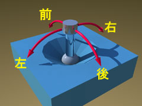
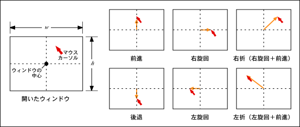
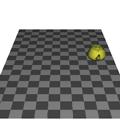
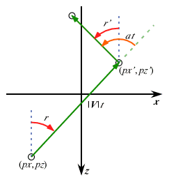

ラジコンティーポットの実験
地面の上に置いた物体を， マウスを使ってコントロールするプログラムを作ってみましょう． これまでに作ったプログラムをベースを改造するのが手っ取り早いと思いますが， うまく行かなければ下の手順を参考にしてください． ソースファイル名は prog6.c としてください．
下のプログラムは地面の上に１個のティーポットを静止画で表示します． なんでティーポットなのかというのは置いておいて， これをマウスを使って「ラジコンカー」のように操作できるようにしてください．
#include <stdlib.h>
#include <GL/glut.h>
#define W 6 /* 地面の幅の２分の１ */
#define D 9 /* 地面の長さの２分の１ */
/*
* 地面を描く
*/
static void myGround(double height)
{
const static GLfloat ground[][4] = {
{ 0.6, 0.6, 0.6, 1.0 },
{ 0.3, 0.3, 0.3, 1.0 }
};
int i, j;
glBegin(GL_QUADS);
glNormal3d(0.0, 1.0, 0.0);
for (j = -D; j < D; ++j) {
for (i = -W; i < W; ++i) {
glMaterialfv(GL_FRONT, GL_DIFFUSE, ground[(i + j) & 1]);
glVertex3d((GLdouble)i, height, (GLdouble)j);
glVertex3d((GLdouble)i, height, (GLdouble)(j + 1));
glVertex3d((GLdouble)(i + 1), height, (GLdouble)(j + 1));
glVertex3d((GLdouble)(i + 1), height, (GLdouble)j);
}
}
glEnd();
}
/*
* 画面表示
*/
static void display(void)
{
const static GLfloat lightpos[] = { 3.0, 4.0, 5.0, 1.0 }; /* 光源の位置 */
const static GLfloat yellow[] = { 0.8, 0.8, 0.2, 1.0 }; /* 車の色 */
static GLdouble px = 0.0, pz = 0.0; /* 車の位置 */
static GLdouble r = 0.0; /* 車の方向 */
/* 画面クリア */
glClear(GL_COLOR_BUFFER_BIT | GL_DEPTH_BUFFER_BIT);
/* モデルビュー変換行列の初期化 */
glLoadIdentity();
/* 光源の位置を設定 */
glLightfv(GL_LIGHT0, GL_POSITION, lightpos);
/* 視点の移動（物体の方を奥に移す）*/
glTranslated(0.0, 0.0, -25.0);
glRotated(30.0, 1.0, 0.0, 0.0);
/* シーンの描画 */
myGround(0.0);
glPushMatrix();
glTranslated(px, 1.0, pz);
glRotated(r - 90.0, 0.0, 1.0, 0.0);
glMaterialfv(GL_FRONT, GL_DIFFUSE, yellow);
glutSolidTeapot(1.0);
glPopMatrix();
glFlush();
}
static void resize(int w, int h)
{
/* ウィンドウ全体をビューポートにする */
glViewport(0, 0, w, h);
/* 透視変換行列の指定 */
glMatrixMode(GL_PROJECTION);
/* 透視変換行列の初期化 */
glLoadIdentity();
gluPerspective(30.0, (double)w / (double)h, 1.0, 100.0);
/* モデルビュー変換行列の指定 */
glMatrixMode(GL_MODELVIEW);
}
static void keyboard(unsigned char key, int x, int y)
{
/* ESC か q をタイプしたら終了 */
if (key == '\033' || key == 'q') {
exit(0);
}
}
static void init(void)
{
/* 初期設定 */
glClearColor(1.0, 1.0, 1.0, 1.0);
glEnable(GL_DEPTH_TEST);
glDisable(GL_CULL_FACE);
glEnable(GL_LIGHTING);
glEnable(GL_LIGHT0);
}
int main(int argc, char *argv[])
{
glutInit(&argc, argv);
glutInitDisplayMode(GLUT_RGBA | GLUT_DEPTH);
glutCreateWindow(argv[0]);
glutDisplayFunc(display);
glutReshapeFunc(resize);
glutKeyboardFunc(keyboard);
init();
glutMainLoop();
return 0;
}
操作にはマウスを使いますが，あくまでラジコンなので， ジョイスティックによる操作を模倣するようにしてください． ジョイスティックとはラジコン送信機（プロポ）などに取り付けられている 棒状のコントローラで，例えばこの棒を前に倒すと前進し， 後ろに倒すと後退する，というように操作します．

マウスをこの代用に使うなら， たとえば，マウスを（机の上で）前方にドラッグすれば前進， 後方にドラッグすれば後退， 右にドラッグすれば右折，左にドラッグすれば左折するようにします． マウスカーソルがウィンドウの中心にある時をジョイスティックの中立点 （ニュートラル）とし，そこからのマウスカーソルの変位が大きくなるほど， 速度やハンドルを切る量が増すようにしてみてください． その際，車の前部（というかティーポットの注ぎ口）が， 常に進行方向に向くように工夫しましょう．


- 車（ティーポット）の現在位置は display() の中の $px$ および $pz$ の二つの変数で設定しています．この値を変更すれば， 車（ティーポット）の位置を変えることができます． また，その位置での進行方向は $r$ で設定しています．
- 現在位置を $\mathbf{P} = (\mathit{px}, \mathit{pz})$
とし，速度ベクトルを $\mathbf{V}$ とすれば，
$t$ 秒後の位置 $\mathbf{P}' = (\mathit{px}', \mathit{pz}')$ は次式で求められます．
\[ \mathbf{P}' = \mathbf{V}t + \mathbf{P} \]
- またその位置における進行方向 $r'$ は，
現在の進行方向を $r$，進行方向を変える速度（ハンドルを切る速さ）を $a$ とすれば，次式で求められます．
\[ r' = at + r \]
- したがって，ウィンドウの中心位置とマウスカーソルの関係から，
速度ベクトルの絶対値（進行方向に対する速度）
$|\mathbf{V}|$ と角速度 $a$ を求めます．
現在位置における速度ベクトル $\mathbf{V}$は次式で求められます．
\[ \mathbf{V} = (|\mathbf{V}|\sin r, |\mathbf{V}|\cos r) \]ただし，glRotated()の第１引数 $r$ は左回転が正なのに対してマウスの座標系は右方向が正であること，および $r$ の単位は度なのに対して数学関数 sin(), cos() の引数はラジアンで与える必要があることに注意してください．
- ウィンドウのサイズは resize() の引数で得られますから， それらからウィンドウの中心位置を求めます． 得られた位置は，他の関数で利用できるように， 適当な外部変数に代入しておきます．
- ドラッグ中のマウスの位置を得るために， このプログラムにマウスのドラッグ中に呼び出す関数を追加し， それを glutMotionFunc() の引数に指定します．マウスの位置は追加した関数の引数で得ることができますから， その位置のウィンドウの中心からの変位を元に， 進行方向とその方向に対する速度を決定します． これらも適当な外部変数に代入します．
- この進行方向とその方向に対する速度をもとに， ティーポットの現在位置を変更します．なお，時刻 $t$ は経過時間を計測して決定する必要がありますが， 面倒なら定数でも構いません． $t = 1$ くらいから始めて適当なスピードになるよう調整してみて下さい．
- もちろん，ティーポットの移動は滑らかに行われるようにしてください． また画面のちらつきも抑制するようにしてください．

なお，これはあくまで「一例」に過ぎません． 自分の思う方法で運転方法を考えてくれれば結構です． ただし，せめて「８の字」くらいはできるようにして下さい． ロールしたりバンク（バイクだと思えば）していたりしたらもっと嬉しいかも．